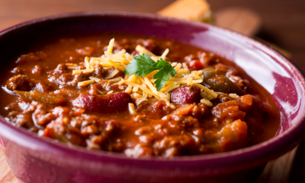

Ground Beef and Bean Chili
- 1 lb ground beef
- 1 can kidney beans, drained and rinsed
- 1 can black beans, drained and rinsed
- 2 cans diced tomatoes
- 1 onion, chopped
- 3 cloves garlic, minced
- 1 bell pepper, chopped
- 2 Tbsp chili powder
- 1 tsp cumin
- Salt & pepper to taste
Directions
- In a large pot, brown the ground beef over medium heat. Drain excess fat.
- Add the chopped onion and garlic, and cook until softened.
- Stir in the bell pepper, beans, tomatoes, chili powder, cumin, salt, and pepper.
- Bring to a boil, then reduce heat and simmer for 30 minutes.
- Serve hot, optionally with a side of rice or a fresh salad.